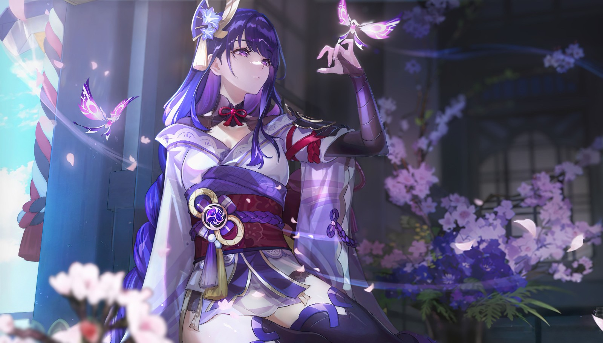
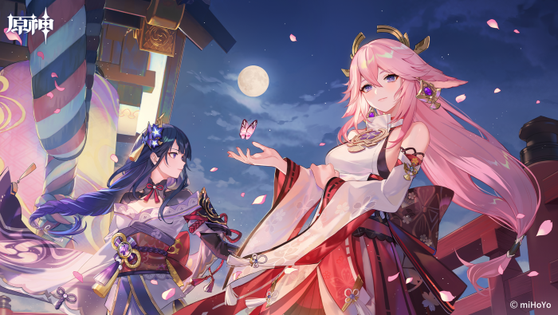

雷电将军

角色形象
角色故事
雷电将军，本名雷电影，是稻妻地区的统治者，在当地有“御建鸣神主尊大御所大人”的威名，神名为“巴尔泽布”。她是前任雷神“雷电真”的妹妹，两人是双生魔神，共同赢下了魔神战争。随后雷电真在稻妻设下幕府，她精于管理但不擅武艺，雷电影是善战的武者，作为影武者辅助姐姐管理稻妻，世人大多不知道两人共同执政。在数百年前的一场大战中，雷电真陨落，雷电影承继雷神之位，对外沿用姐姐的神名“巴尔”，经历过朋友和亲人的离去，雷电影决意追求“永恒”。为了避免时间带来的“磨损”，她制作了与她外形一样的人偶“雷电将军”负责处理日常政务和承受磨损，自身在内心世界“一心净土”中修行。她的眷属八重神子不太认同她的做法，在旅行者到访稻妻之后，八重神子发现旅行者能进入“一心净土”，于是锻炼旅行者拥有对抗雷电影的能力，希望以武力的形式让雷电影明白当下追求“永恒”的方式是无效的。在旅行者和八重神子的努力下，雷电影改变了先前的想法，也废除眼狩令。雷电影也开始反思过去管理稻妻的方式，并着手改变人偶的设定。雷电影在设计人偶之初就考虑过自己日后可能会三心两意，有纠正机制确保自己的“初心”得以践行。雷电影为了修改人偶的设定，与人偶在次空间戮战数百年并胜之，向人偶证明自己新的想法经得起挑战和考验。在战斗中她也获得雷电真留下的残魂认可，获得眷顾稻妻的“神樱树”种子，并在过去种下种子，接着雷电影解除了稻妻的锁国令。

性格特点
巴尔泽布和姐姐巴尔虽然在时间“磨损”一事上有共同的认知，但相比为未来担忧的巴尔泽布，巴尔更愿意把注意力放到现在。那时的巴尔泽布只能反省自己身为一介影武者，居然比雷电将军还古板。她也会反思，想学着和姐姐一样，更加从容一些。但突变之日来得太快，巴尔泽布毫无防备。回过神来，她手中竟已握着弥留之际的巴尔递来的刀 。
只要前进，便会有所失去。巴尔泽布认为，这正是以时间为载体作用于整个世界的钢铁法则。终有一日，稻妻将会失去神的庇护。身为武人，她警惕一切对手。哪怕敌人是如时间般虚无的危机，她也要赶在那一日到来之前，找到反击的武器。她的答案是“永恒”。唯有“永恒”能令万物停驻，能令稻妻长生不灭 。她也知道，追求“永恒”可能也只是一种逃避罢了。最后她隐于一心净土的方法也和缩壳乌龟一样。不过她乐观的认为，乌龟本来就是长寿的象征，说不定追求永恒就是会变成这样的形态。
眼狩令事件中，巴尔泽布心中认定的“永恒”被民众的万千“愿望”所动摇。她心中空明，本已臻自我之境，可听见人民的呼喊，便要为之停下脚步 。前进会带来失去，但也会创造相遇 。身为稻妻之神，她背负投向天光的万千视线，战胜曾经订立的永恒的规则，回应了稻妻子民的愿望 。
返回首页